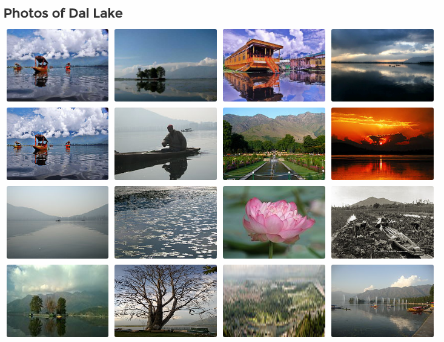

The jewel of Srinagar, the Dal lake is synonymous to a visit to Srinagar and almost a visual definition of the town. Spread over 26 square kilometres, it is the most photogenic stretch of paradise on earth and undoubtedly also the most sought after attraction. It is situated in the midst of beautiful lush green mountains and is the most pristine view of nature in all its glory. Facilities such as shikara boat rides, house boats and lake markets make this place a favourite among tourists.
Srinagar has always been a pleasant place to visit in summer, therefore, making it one of the favourite places the Mughals and the Britishers liked to go during summer. One of its main attractions was the Dal Lake which was not left unnoticed. The Dal lake consists of four main char chinars in the middle of the lake which is a means of its recognition. The Mughals saw the potential in the Dal lake and surrounded it with beautiful gardens and pavilions and also built the Shalimar and Nilshad Gardens exactly at a place where the beautiful outstretched lake can be seen in all its glory. The Britishers brought forward the concept of boat houses in the Dal Lake, which further promoted tourism to the lake. A tourist hub, one should not miss the pristine beauty of Dal Lake.
Houseboats and Shikara are synonymous with the Dal Lake, especially since the Shikaras are a cultural symbol and seen only in Srinagar. These are wooden boats pointed at both ends and have beautifully decorated canopies overhead. It is the favoured means of transport for local people, and you can see them ferrying a variety of goods across the lake to the mainland. Tourists have also taken a liking to it and a ride is a must have. A unique shopping experience in the Dal Lake is that of the lake market, which includes a number of shops located right on the midst of the lake. Much like a roadside market would have, hawkers are present here as well. They have Shikaras of their own and have all sorts of good for sale, which include Kashmir's specialities such as wooden artwork, hand made earrings, saffron and even Kashmiri ponchos.
The other attraction in the waters of Dal Lake is the houseboat, which are stationary boats meant to serve as accommodation for visitors. Overlooking the Dal Lake, they provide the most exquisite views of the lake and its surrounding mountains. They are made of good quality wood with intricate carvings and floral motifs. These could range from a simple one-room affair to huge luxurious suites and are graded accordingly by the Department of Tourism. Often, the interiors are beautifully decorated with Kashmiri carpets, crystal chandeliers and plush furniture. The houseboats are often family run businesses with delicious home - cooked meals, top notch facilities such as hot tubs and WiFi, and endearing personalised service.
Dal Lake is not one lake but a combination of three separated by causeways that in itself becomes an attraction. Houseboats with swimming facilities are allowed during summer and can be very refreshing. The beautiful floating gardens of Dal Lake brings in people from all over the world. Shikaras boats are the perfect medium to enjoy a quaint ride across the lake, and is a must go to if you are visiting Kashmir.
Another interesting activity in the lake is the market, where vendors have their own Shikaras and are not shy of approaching tourists with their most endearing handicrafts, saffron, edibles and even ice - creams in tow. Ice skating during winter on the frozen Dal Lake also attracts many tourists and is a wonderful activity to pursue under Kashmir's winter sun. The important attractions in and around the lake include the Island of Char Chinar, Nagin Lake, Chashme Shahi, Shankaracharya Temple, Hari Parbat, Hazratbal Shrine, Mazar-e-Shura Cemetery and Kashmir houseboats and shikara.
Dal Lake is on an average 5 ft deep and goes to a maximum of 20 ft at some places. Covering a shoreline of about 15.5 kilometres, the lake covers an area of about 18 square kilometres. It comprises of four basins- Lokut Dal, Nagin (also a separate lake), Gagribal and Bod Dal. In the middle of Bod Dal, there is a small island by the name of Sona Lank. Lokut Dal is also called Rup Lank and Char Chinari. Floating gardens in the midst of the lake bloom with lotus flowers in the months of July and August, while winter season sees the temperature here dropping to -11 °C, freezing the lake. Currently, intensive cleaning and maintenance operations are underway at the lake to restore it to its former glory.